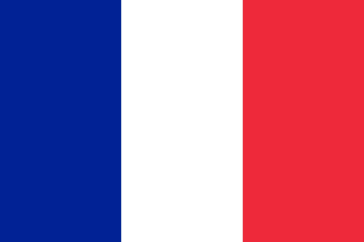

|
BrazilThroughout history, Brazil have always been one of the best sides at every tournament. The South American giants have won
the famous trophy on five occasions, more than any other team. Brazil hosted the previous World Cup in 2014 but were disgraced and embarrassed
in the semi final, where they were thrashed 7-1 by Germany. Brazil are coached by very experienced Tite and under him, Brazil are playing some of
the best football since they won their last world cup back in 2002. Many beleive Brazil has regained their elite status under Tite who not only
brought flair back but also pragmatic approach when needed in difficult gamesThis Brazil side looks very dangerous and head to Russia as one of
the favourites to win the tournament.
Odds: 5/1 |
 |
GermanyThe current world champions, Germany, return to the global stage in Russia this summer hoping to become the first country since Brazil
in 1962,to retain the World Cup trophy. Joachim Low has been in charge of Die Manschaft since 2006 and has had a very successful spell.
Since Low became manager, Germany have not exited an international tournament before the semi final stage. Germany qualified for the finals in Russia
with a perfect record of 10 wins from 10 in UEFA Group C. No fewer than 21 players found the target as Die Mannschaft became just the second team
in history – after Spain in 2010 – to progress with a 100 percent record. Germany are always one of the favourites for every tournament that they
participate in and have a brilliant track record at the World Cup.
Odds: 5/1 |
| |
SpainThe 2010 Winners will be desperate to put on a show in Russia after their embarrassing group stage exit in 2014.
Spain struggled in Brazil 4 years ago but qualified for Russia with ease, winning 9 out of their 10 matches, scoring 36 goals in the process.
This will be Spain’s 14th World Cup finals and they look well equipped to go far in the tournament. Spain’s midfield oozes with quality and their
defence may be the best around but with very few attacking options, I wouldn’t suggest betting on them to win the tournament.
Spain are also blessed with debatably the best goalkeeper in world football. David De Gea has been playing out of his skin for Manchester United and
if he keeps up his ridiculous form this summer, Spain could become World Champions yet again.
Odds: 13/2 |
|  |
FranceFrance have one of the best squads in international football containing attacking options that would be suitable for any team in
the world. Despite their disappointing loss on home soil at Euro 2016, France will enter the tournaments as one of the favourites and shouldn’t struggle
to win the group comfortably. France’s attacking options are brilliant with players such as Ousmane Dembele, Kinglsey Coman and Dimitri Payet all not
certain of a place in France’s squad. The French defence will be protected by the likes of N’Golo Kante, Blaise Matuidi and Paul Pogba but Raphael Varane
and Co. shouldn’t need too much help anyway. Tottenham goalkeeper Hugo Lloris could be seen as a liability and despite making plenty of fantastic saves, he
is prone to making big errors.
Odds: 15/2 |
 |
ArgentinaArgentina have had a rough time in international competitions in recent years, losing the World Cup final to Germany in 2014 and losing
consecutive Copa America finals to Chile in 2015 and 2016. The only thing missing in Lionel Messi’s record book is an international trophy and Russia 2018 could
be the perfect opportunity for Messi and Argentina to become World Champions. The 2014 World Cup runners up will be hoping to improve on their performance in
Brazil 4 years ago. Argentina have some incredible players in their ranks alongside Lionel Messi; including Sergio Aguero, Gonzalo Higuain and Paulo Dybala.
Argentina don’t exactly have the toughest defence and almost missed out on qualification to the tournament.
Odds: 11/1 |
| |
BelgiumBelgium head to Russia as one of the favourites for the tournament due to their brilliant squad. The Belgium team is blessed
with talent all over the pitch from their goalkeeper right up to their forwards. The Red Devils topped their qualification group in style, winning
9 out of their 10 matches, only dropping points in a 1-1 draw against Greece. Belgium scored 43 goals in qualification, 11 of which were scored by
Man United’s Romelu Lukaku. Even PSG right back, Thomas Meunier scored 5 goals in their qualifying games which shows just how good the Belgium side really is.
Hazard is one of the most skilful players in the world and is expected to replace Cristiano Ronaldo at Real Madrid. Hazard played a central role in
Chelsea’s Premier League wins during the 204/15 and 2016/17 seasons. Kevin De Bruyne is the best midfielder in the world and that’s just a fact. And finally,
there is Romelu Lukaku.The former Everton striker became Belgium’s all time leading goalscorer when he netted against Japan in November 2017 aged just 24.
Odds: 12/1 |
| |
EnglandEngland will be playing at their sixth consecutive World Cup this summer and will be hoping to progress past the Last 16
for the first time since 2006. England fans have suffered from serious heartbreak over the past 50 years or so but definitely have a very talented
side. Southgate often likes to give young players a chance but will he trust Ruben Loftus Cheek in his starting line-up at the World Cup? England’s
defence could be seen as vulnerable and the midfield could be described as “not good enough” but there is one position where England can not be
doubted: Up front. Harry Kane was the most prolific goal scorer in world football during 2017 and all of us at home will be praying that he can
keep up his insane goal scoring form this summer (and not take corners).
Odds: 20/1 |
| |
PortugalPortugal head to Russia as European Champions after their triumph at Euro 2016 in France. Portugal won their qualification group
ahead of Switzerland and Hungary and will fancy their chances of succeeding in Russia. Ronaldo has scored a single goal (and no more) in every
World Cup since 2006.The Real Madrid legend needs seven goals to become Portugal’s all-time leading goal scorer at the World Cup finals. Eusebio currently
holds that record with 9 goals, all of which came in one tournament. Ronaldo scored an incredible 15 goals in qualification for the World Cup whilst
22 year old Andre Silva chipped in with a further 9.William Carvalho will play in central midfield and break down opposition attacks before helping to
get the ball forward to Ronaldo and Co.
Odds: 28/1 |
| |
ColombiaColombia qualified for Russia by a solitary point, ahead of
Peru and Chile. Both Brazil and Uruguay were held to draws by The Colombians which demonstrates the side’s ability to shut out the so-called “bigger” sides.
Arsenal’s David Ospina plays in goal for his country and is usually more than reliable. James Rodriguez was relatively unknown before the 2014 World Cup but
finished the tournament as top scorer with 6 goals in Brazil. Four years on, James is one of football’s biggest names, winning 2 Champions League titles
with Real Madrid before moving to Bayern Munich on loan in the summer where he has blossomed once again. Nobody can quite understand why Radamel Falco
was unable to perform in the Premier League but the Colombian captain will be a vital figure for his country on and off the pitch.
Odds: 50/1 |
| |
RussiaRussia are hosting the 2018 World Cup for the first time in the nation’s history. Stanislav Chercheshov’s men will be hoping to
impress not only their home fans but the billions of fans around the world who will be watching. Some may say that Russia under performed at the 2014
World Cup, where they exited in the group stage after losing to Belgium and failing to beat South Korea and Algeria.The Russians were also poor at
Euro 2016 and picked up just one point in the group stage, against bloody England of all teams. Igor Akinfeev has over 100 caps for his country and will be eager to
make his country proud this summer. Although Russia have never made it out of the group stage, the host nation always over performs.
Odds: 50/1 |